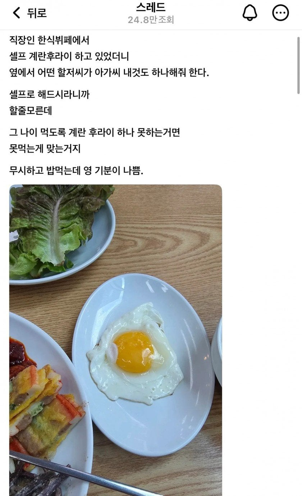

85 · 10 · 1 시간 전 · 원문

수집 당시 댓글 10개
↳ 답글 · 고모고모부총난사 · 17 분 전
저 할아버지는 모르겠고 저런 할아버지는 못해도 수만명은 있겠다
↳ 답글 · 다롱찌 · 14 분 전
난 내가 직접 봐서 존재하는거 앎
↳ 답글 · 새우쉬림프실버 · 11 분 전
나도 저거 당해봤어... 종종 있어 저런분들
↳ 답글 · LRhook · 6 분 전
진짜있음 ㅋㅋ 하는김에 자기꺼도 해달라는 염치없는 새끼들
말머리근본주의 · 19 분 전
그나이먹고 후라이하나 못하면안먹는게 맞음
빠빠양 · 8 분 전
걍 귀찮아서 저러는거라 절대 해주면안됨
꿦꿧꿨꿩꿪꿫 · 8 분 전
ㅋㅋ 손이없나 발이없나
화염기사호호 · 7 분 전
김서방 고기 한 근 썰어주게
중갑부대1 · 2 분 전
면전에 저 아세요? 박아야지 ㅋㅋ
ziok · 방금 전
안해줌
저 할아버지는 모르겠고 저런 할아버지는 못해도 수만명은 있겠다